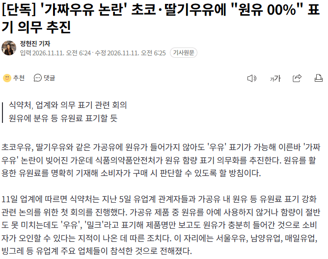

디시인이 큰거했다 ㅋㅋ

디시인이 큰거했다 ㅋㅋ
원유 빼면 그냥 초코맛 물 아니냐
농축액처럼 원유 0.1%넣고 우유라고 표기하는 생식 벌어질듯
아예 우유라는 단어를 못 쓰게 해야하는거 아님??
그러게 다른 제품들은 oo맛xx로 표기하게 해놓고 왜 우유만 냅뒀지
서울우유가 원유 함유량 제일 높다는 기사를 옛날에 봤었어가지고
딸기 우유 먹고 싶을 때는 서울우유만 먹었는데
나도 그랬음
그리고 원유함량 표시 최근까지 해주는 몇 안되는 회사였음 ㅋㅋㅋ
나도 그랬는대..미노스인가 그건 아직 높더군
우유 안넣는데 서울이지 왜 서울우유임
생각해보니 서울 붙인것도 괘씸하네 그냥 이름 없애라
이름을 불러선 안 될 그것 ㄷㄷ
우유맛으로 이제 표기할라나 ㅋㅋㅋ
우유에 물 탄게 아님 물에 우유를 탄거임
병신짓 한게 맞음
대충 가루 넣어서 우유라고 속이기 ㅋㅋㅋㅋ
푸르밀 밀크플러스 ㅇ이새끼들은 ㄹㅇ 물+분유타서 저지랄하던데 철퇴좀 맞아야함
서울분유
서울우유지만 킹협계열임 ㅋㅋ
딸기맛우유맛물 ㅋㅋㅋ
관계자들 마티즈 마렵겠다ㅋㅋ
식약처도 고소해 보시지
서울우유 자살골 ㅋㅋㅋㅋ